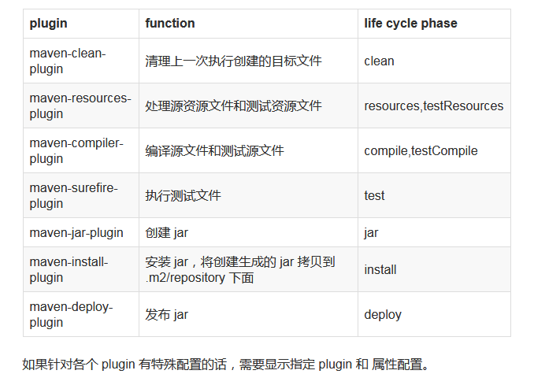

maven plugin¶
Maven 默认插件¶
已知 Maven 使用 plugin 来执行实际操作的，在默认情况下，Maven 会绑定以下几个插件来完成基本操作。
创建一个空的 maven 项目 HelloWorld，pom.xml 文件不包含任何 plugin。
<?xml version="1.0" encoding="UTF-8"?>
<project xmlns="http://maven.apache.org/POM/4.0.0" xmlns:xsi="http://www.w3.org/2001/XMLSchema-instance"
xsi:schemaLocation="http://maven.apache.org/POM/4.0.0 http://maven.apache.org/xsd/maven-4.0.0.xsd">
<modelVersion>4.0.0</modelVersion>
<groupId>com.meituan.log</groupId>
<artifactId>HelloWorld</artifactId>
<version>1.0-SNAPSHOT</version>
<packaging>jar</packaging>
<dependencies>
<dependency>
<groupId>org.apache.hadoop</groupId>
<artifactId>zookeeper</artifactId>
<version>3.3.1</version>
</dependency>
<dependency>
<groupId>org.apache.hadoop</groupId>
<artifactId>zookeeper</artifactId>
<version>3.3.1</version>
</dependency>
</dependencies>
</project>
下面是执行 mvn clean install 产生的执行日志，通过日志可以看到每个步骤都显示 plugin 名称，版本号，生命周期阶段，执行操作等。
- maven-clean-plugin:2.5:clean (default-clean)
- maven-resources-plugin:2.6:resources (default-resources)
- maven-compiler-plugin:3.1:compile (default-compile)
- maven-resources-plugin:2.6:testResources (default-testResources)
- maven-compiler-plugin:3.1:testCompile (default-testCompile)
- maven-surefire-plugin:2.12.4:test (default-test)
- maven-jar-plugin:2.4:jar (default-jar)
- maven-install-plugin:2.4:install (default-install)